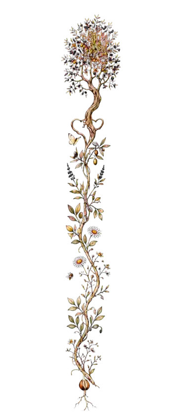
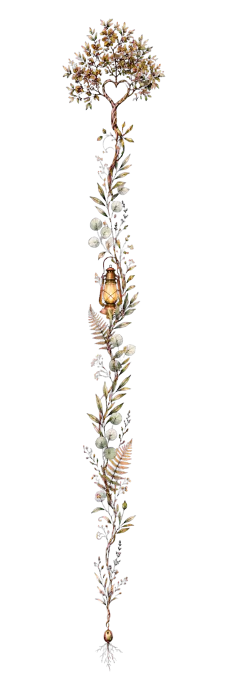
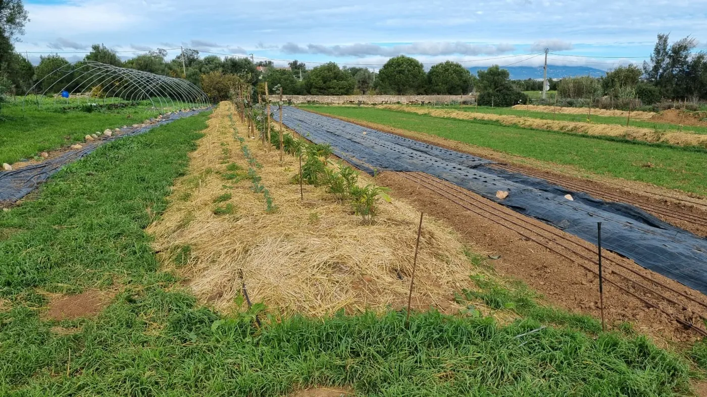
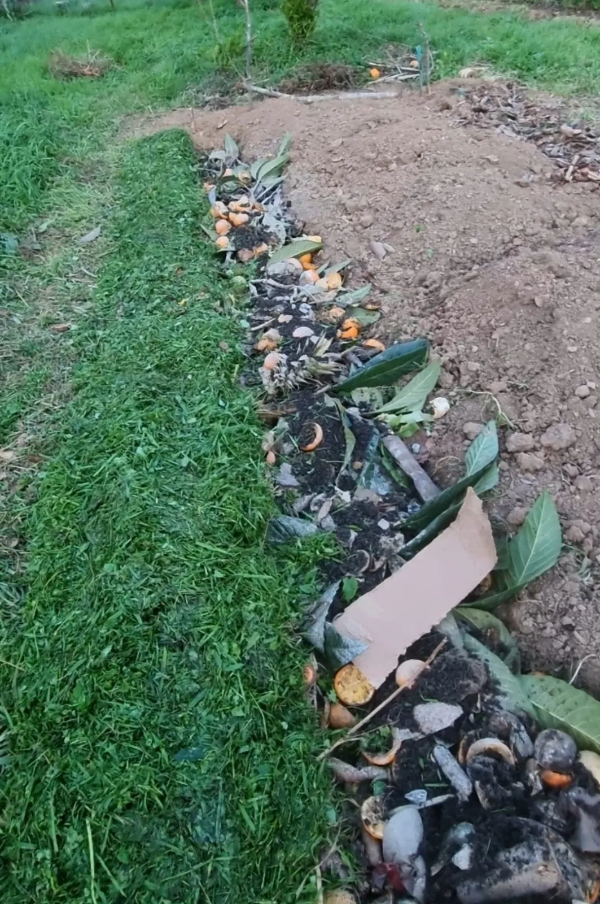
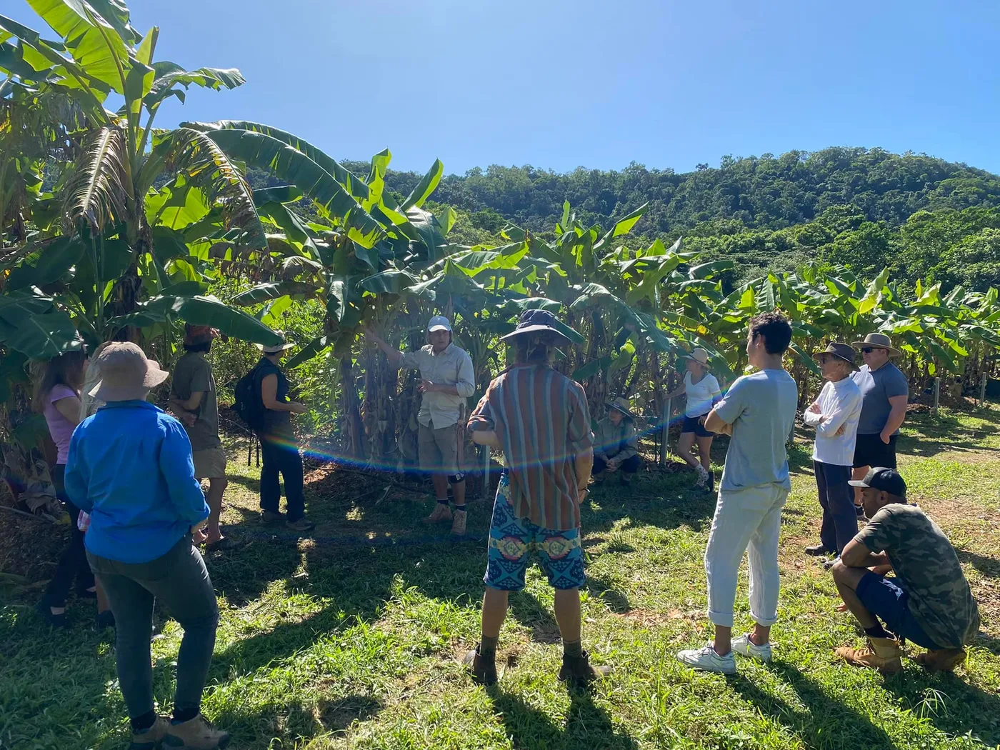
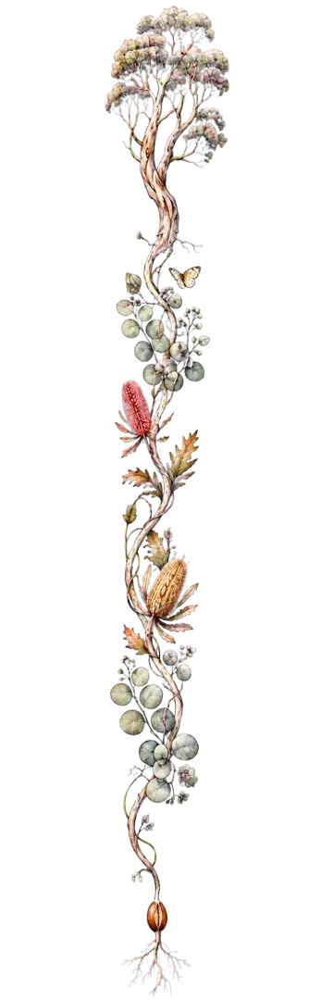

Regenerative Clarity Session
Untangle the questions, identify the highest-leverage actions and leave with a grounded 30–90 day direction.
- Review of goals, maps and photographs
- One focused consultation
- Short written action summary

Work with Benjy
Regenerative property & orchard guidance · Oliveira do Hospital · Coimbra · Central Portugal + online
Understand your land. Hold more water. Feed the soil. Grow abundance. Know what to do next.
Whether you steward a tired orchard, garden, quinta, farm, retreat centre or community project, we can turn a beautiful but complicated vision into a clear, phased regenerative pathway.

Not just more plants
A regenerative design is more than a planting plan. It asks how water moves, where life gathers, what the soil is hungry for, which resources already exist—and how people can care for the system with joy.
Benjy brings together permaculture design, syntropic agroforestry, organic and regenerative growing, soil-building, water awareness and practical project coordination. His path has been shaped by learning and work across Germany, seven formative years in Australia, Colombia and Asia, and is now rooted in Portugal.
The aim is not instant perfection. It is a beautiful sequence: protect what is alive, make water and biomass allies, create useful edges, establish diverse living roots, and grow a system that becomes more resilient and generous over time.
“We do not begin by forcing the land into a picture. We begin by listening for the next relationship that wants to come alive.”
Three ways to begin
You do not need to choose a complicated package. Tell us where you are; we will recommend the lightest useful level of support.
Untangle the questions, identify the highest-leverage actions and leave with a grounded 30–90 day direction.
Read the place together—water, soil, access, trees, biomass and real human capacity—then organise what comes first.
Move from whole-property vision into phased implementation, seasonal review and a team that understands the system.

Capabilities for a living system
These elements can stand alone or come together inside a property walk, design package or ongoing regeneration partnership.
Bring land, water, access, food, habitat, buildings and human needs into one coherent living plan.
Help olive, citrus, fig and mixed orchards recover function, fertility, water cycling, diversity and a realistic rhythm of care.
Tree health, pruning, irrigation, plant protection and earthworks may require local agronomy, arboriculture or engineering specialists. We coordinate only within confirmed scope.
Slow, spread, sink, shade and cycle water so rainfall has more opportunities to become life.
Concept guidance is adapted to each site. Surveying, earthworks engineering, water law and permissions may require licensed local specialists.
Create productive polycultures that feed people while building soil, habitat, shade and biomass.
Turn prunings, branches, wood, leaves and overlooked edges into moisture-holding, fungal, fertile ground.
Keep a good design intact while real people, materials, budgets and seasons bring it into the ground.
Give gardeners, land teams, guests and communities the confidence to understand and care for the living system.
Extend regenerative care from the landscape into a simpler, lower-toxin and more life-supporting home.
Educational guidance only; medical, electrical and building decisions should be confirmed with qualified professionals.
A professional process with a living heart
Your needs, capacity, resources, dreams and boundaries.
Water, slope, sun, wind, access, soil, vegetation and existing life.
The right actions, in the right order, at a scale you can care for.
A visual, phased pathway with practical next steps and useful details.
Implement, observe, maintain, celebrate and evolve with the system.
A partnership, not a disappearing consultant
We do not want to hand over a beautiful PDF and disappear.
When you want ongoing support, we can walk beside you through priorities, implementation, seasonal observation, learning and adaptation—until the family, gardener or team caring for the land understands what the system needs and why.
A signature Awakening Eden approach
Branches are not always waste. Prunings are not always a problem. An edge can become a sponge, a fungal pathway, a wind-softener, a nursery and a feast.
Depending on the site, we use woody material, leaves, mulch, compost, biochar, living groundcovers and support plants to protect soil and create the conditions for deeper fertility. The goal is a resource-conscious system that holds moisture, cycles nutrients and becomes easier—not harder—to care for.
From classrooms to living soil
The photographs below are from Benjy and Sofia’s real journey of planting, teaching and learning with communities.







Meet Benjy
A one-minute introduction video will live here: who Benjy is, how his international journey shaped the work, and how he can help you find the next regenerative step for your land.
The video is on its way. Until then, the photographs and field notes across this page carry a little of the story—and the enquiry form is open whenever your land is ready to speak.
Is this for you?
Good questions are welcome
You do not need expert language or a finished vision. A few honest details are enough for a first conversation.
No. The same whole-system thinking can help a home garden, tired orchard, quinta, farm, retreat centre, school or community project. The recommendations should match the scale you can genuinely care for.
Yes. We can look at soil cover, water movement, tree vitality, diversity, biomass, irrigation and care rhythms, then create a phased revival pathway that works with what is already alive.
Yes. Focused clarity sessions and design reviews are available online worldwide. Site visits and implementation support are arranged by agreement, with a growing focus on Central Portugal.
Yes, where scope and location allow. Support can include phasing, sourcing, gardener or contractor coordination, planting days, team training, seasonal reviews and adapting the plan as the land responds.
Benjy can help read water patterns and develop regenerative concepts. Surveying, earthworks engineering, water law, permits and high-risk construction must be confirmed with qualified local specialists.
Benjy will read your story, recommend the smallest useful first step and reply with any questions. Before paid work begins, you receive a clear scope so you can decide without pressure.

Tell me about your land
Share where you are, what you are caring for and what feels most difficult right now. You do not need to know which service you need.
Helpful to mention: location, approximate size, present land use, water situation, your vision, your main challenge and the kind of support you hope for.
Available: on-site work around Oliveira do Hospital, Coimbra and roughly one hour’s drive in Central Portugal, plus remote sessions worldwide.
Languages: English, German and Spanish (with Sofia).
Prefer to write directly? Message Benjy on WhatsApp regenerativeeden@gmail.com
Not ready for a project?
Receive new guides, garden stories, workshops and practical seeds of hope. The community spaces are for shared learning; project enquiries belong in the form above so they do not get lost.